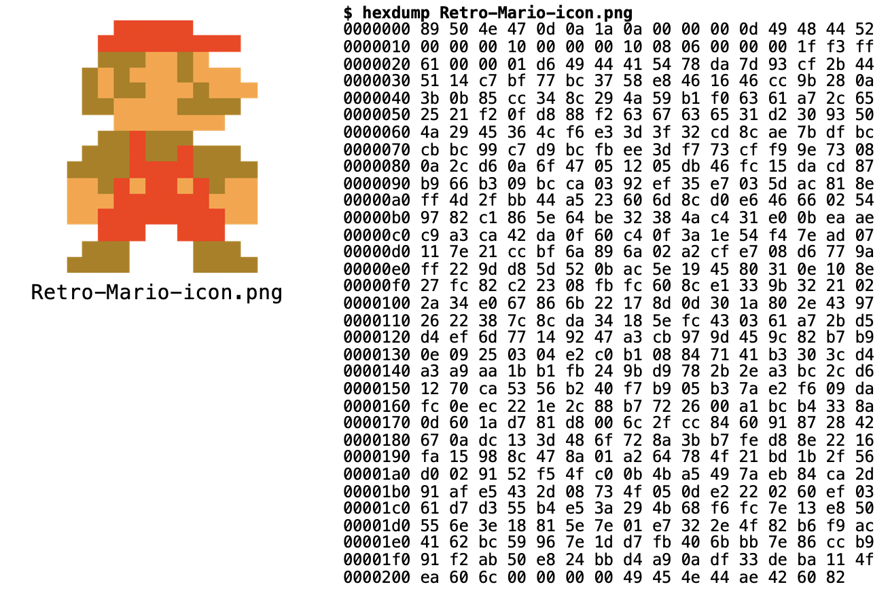

09 - Arquivos¶
Nossos programas até o momento utilizam dados fornecidos pelo usuário ou obtidos a partir de algum cálculo, mas esses dados são perdidos assim que o programa acaba. Arquivos são estruturas de dados que normalmente são armazenados em dispositivos secundários de memória. Esses dispositivos secundários de memória permitem o armazenamento permanente dos dados, ou seja, mesmo depois que o programa acaba ou até depois que o computador é reiniciado, os dados continuam existindo. Os principais dispositivos de armazenamento atualmente são:
- Disco Rígido (HD)
- Solid-State Drive (SSD)
- Pen Drives
Os arquivos armazenados nestes dispositivos possuem sempre uma identificação (nome) e sua localização (normalmente em uma estrutura hierárquica de diretórios). Outros atributos como data e permissões de acesso também são normalmente usados no índice.
Acessando arquivos¶
Arquivos são lidos como uma sequência de bytes. Um byte é um conjunto de 8 bits (BInary digiT), que são valores do tipo 0 ou 1. Bytes por si só não possuem significado nenhum, são simplesmente uma sequência de 0s e 1s. É necessário que um programa seja capaz de entender essa sequência de bytes do arquivo para extrair alguma informação.
Existem basicamente dois tipos de arquivos:
- Arquivos de texto: os bytes representam caracteres. Por exemplo, os arquivos
.pyque criamos com o nosso código Python são arquivos de texto. Cada caractere do nosso código Python (incluindo espaços e pula linha) é representado por um byte e armazenado no nosso HD ou SSD. - Arquivos binários: cada byte pode ter um significado diferente. Por exemplo, em imagens é comum usar bytes para representar cores. No exemplo abaixo, os bytes do arquivo (à direita) são interpretados por um programa que é capaz de mostrar o resultado como uma imagem (à esquerda)

Neste handout vamos aprender a trabalhar com arquivos em Python. Ao final do handout você deve ser capaz de abrir um arquivo para (1) ler os dados armazenados; ou (2) escrever dados.
Arquivos em Python¶
Antes de utilizar qualquer arquivo é necessário abri-lo. Para isso, existe a função open(), que recebe pelo menos dois argumentos: a localização do arquivo e o modo de abertura. Depois de utilizar o arquivo é muito importante lembrar de fechá-lo. Muitos problemas podem acontecer se você esquecer de fechar o programa. Para isso devemos usar a função close():
# Modo tradicional de ler um arquivo
arquivo = open('arquivo_texto.txt', 'r')
conteudo = arquivo.read()
arquivo.close() # O que acontece se não fechar?
# Imprime o conteúdo
print(conteudo)
O programa acima abre um arquivo chamado arquivo_texto.txt para leitura (importante: ele deve existir na mesma pasta onde você está executando o seu programa), armazena o conteúdo na variável conteudo, fecha o arquivo e depois imprime todo o conteúdo do arquivo.
Info
Os testes deste handout utilizam arquivos externos. Por esse motivo, não faz muito sentido fazermos testes de mesa no servidor. A melhor maneira de entender o que o programa está fazendo é executá-lo no próprio computador para observar as mudanças nos outros arquivos. Assim, neste handout não teremos testes de mesa do servidor. Faça todos os testes no seu próprio computador.
EXERCÍCIO 1¶
Teste o programa acima no seu computador. Para isso, crie um arquivo chamado arquivo_texto.txt e escreva alguma coisa (pode ser no Spyder, VS Code, ou qualquer editor de texto de sua preferência - não use o Word, pois ele gera um arquivo muito mais complicado). Salve o programa acima na mesma pasta. Execute seu programa. Ele deve imprimir no terminal o conteúdo do seu arquivo.
Caminho (path) do arquivo
Quando estamos trabalhando com arquivos é comum obtermos o erro FileNotFoundError. Ele ocorre quando tentamos abrir (open()) um arquivo que não existe. É importante que o arquivo que você está tentando abrir esteja na mesma pasta que contém o seu programa.
É possível abrir arquivos localizados em outras pastas do seu computador, mas nesse caso é necessário especificar o caminho do arquivo, ou seja, qual é a sequência de pastas que devem ser percorridas para se localizar esse arquivo.
Abrindo arquivos com o with¶
Como dissemos anteriormente, é muito importante se lembrar de fechar o arquivo depois de utilizá-lo. Na verdade, isso é tão importante que existe uma maneira de escrevermos um código que fecha o arquivo automaticamente depois que terminamos de utilizá-lo:
# Abre um arquivo para a leitura.
with open('arquivo_texto.txt', 'r') as arquivo:
conteudo = arquivo.read()
# Quando sai do bloco do 'with', fecha o arquivo automaticamente.
# Imprime o conteúdo
print(conteudo)
A sintaxe do código acima é um pouco diferente, então vamos por partes. O with define um bloco dentro do qual o arquivo será utilizado. Assim que o bloco termina, o que é indicado pelo fim da indentação, o arquivo será automaticamente fechado. A função open() não foi alterada, mas agora ao invés de arquivo = open('arquivo_texto.txt', 'r') nós temos open('arquivo_texto.txt', 'r') as arquivo. O resultado será o mesmo: o arquivo aberto será armazenado na variável arquivo. Essa inversão da ordem é feita apenas em conjunto com o with.
EXERCÍCIO 2¶
Teste a versão do programa acima. O resultado deve ser o mesmo da primeira versão.
Modos de abertura de um arquivo¶
Comentamos que existem dois tipos de arquivo: arquivos binários e arquivos de texto. Nos exemplos acima nós trabalhamos com a leitura de um arquivo de texto. Para isso o modo de abertura do arquivo foi o 'r', ou seja, leitura (read). Para abrir um arquivo binário para leitura devemos utilizar o modo 'rb' (read binary). Tanto o modo 'r' quanto o modo 'rb' permitem apenas a leitura de um arquivo existente. Não é possível adicionar (escrever) nenhuma informação a ele.
Para adicionar dados a um arquivo devemos abri-lo com algum dos modos de escrita. Os modos disponíveis são 'w' e 'a'. O modo 'w' cria um novo arquivo no modo escrita (write). Importante: se já existir um arquivo com o mesmo nome ele apaga o antigo. O modo 'a' (append) é um modo de escrita alternativo que adiciona o novo conteúdo ao final do arquivo se ele já existir, sem apagar o conteúdo anterior. Exemplos:
# Cria o arquivo para escrita (limpa o antigo se já existir)
with open('arquivo_texto.txt', 'w') as arquivo:
# Escrevendo um texto
arquivo.write("algum dado\n")
# Abre/Cria o arquivo para escrita SEM apagar o que tinha antes.
with open('arquivo_texto.txt', 'a') as arquivo:
# Escrevendo um texto
arquivo.write("novo dado\n")
A seguir apresentamos um resumo dos principais modos de abertura de arquivos (para mais detalhes consulte a documentação):
'r': modo de leitura de arquivo texto;'rb': modo de leitura de arquivo binário;'w': modo de escrita de arquivo texto;'wb': modo de escrita de arquivo binário;'a': modo de escrita de arquivo texto, sem apagar o conteúdo anterior;'ab': modo de escrita de arquivo binário, sem apagar o conteúdo anterior.
EXERCÍCIO 3¶
Teste o programa acima no seu computador. Ele não vai imprimir nada no terminal, mas ao abrir o arquivo arquivo_texto.txt o seu conteúdo deve ser:
algum dado
novo dado
Se trocássemos a ordem dos blocos with do programa acima, qual seria o efeito esperado? Teste essa mudança e verifique se ele fez o que você esperava.
EXERCÍCIO 4¶
Salve o arquivo cancao_do_exilio.txt (disponível neste link) na mesma pasta onde você fez os outros testes deste handout. Depois disso, teste cada um dos programas abaixo:
Programa 1¶
# Lendo tudo de uma vez
with open('cancao_do_exilio.txt', 'r') as arquivo:
conteudo_completo = arquivo.read()
print(conteudo_completo)
Programa 2¶
# Lendo apenas a primeira linha
with open('cancao_do_exilio.txt', 'r') as arquivo:
primeira_linha = arquivo.readline()
print(primeira_linha)
Programa 3¶
# Lendo de linha em linha (note o plural em readlines)
with open('cancao_do_exilio.txt', 'r') as arquivo:
# linhas é uma lista de strings, cada linha é uma string diferente
linhas = arquivo.readlines()
# Verificando que linhas é uma lista de strings
print(linhas)
# Imprimindo de linha em linha
for linha in linhas:
print(linha)
Note que no último exemplo as linhas aparecerão sempre com uma linha em branco entre si. Isso acontece porque no arquivo original cada linha termina em um '\n', que indica que a linha terminou, mas o print também pula uma linha automaticamente, então sempre serão puladas duas linhas.
Resumo dos métodos de arquivos:¶
Abaixo você encontra um resumo dos principais métodos de arquivos. Para mais detalhes, consulte a documentação.
Para arquivos abertos no modo de leitura¶
read: retorna todo o conteúdo do arquivo em uma única string;readline: retorna uma string contendo apenas a próxima linha;readlines: retorna uma lista de strings, contendo uma string para cada linha.
Para arquivos abertos no modo de escrita¶
write: escreve no arquivo a string passada como argumento;writelines: recebe uma lista de strings e escreve todas no arquivo.
EXERCÍCIO 5¶
EXERCÍCIO 6¶
Faça o Exercício 85. Bananas no arquivo.
EXERCÍCIO 7¶
Faça o Exercício 86. CSV para TSV.
EXERCÍCIO 8¶
Faça o Exercício 87. Custo do churrasco.
O formato JSON¶
O formato JSON é uma forma de trocar informação de modo estruturado, simples e rápido entre sistemas. Ele é muito parecido com um dicionário do Python, contudo o JSON é um texto (string) e não uma estrutura de dados. Por ser um texto, ele pode ser armazenado em um arquivo. Assim esses dados continuam existindo, mesmo depois que o programa termina. Exemplo:
{"Alunos":[
{ "nome": "João", "notas": [ 8, 9, 5 ] },
{ "nome": "Maria", "notas": [ 8, 10, 7 ] },
{ "nome": "José", "notas": [ 10, 10, 9 ] }
]}
O JSON acima contém os nomes e notas de 3 alunos. Esse poderia ser o conteúdo de um arquivo de texto chamado, por exemplo, alunos.json. Para utilizar os dados presentes nele será necessário processar a string JSON para obter um dicionário. Para isso utilizamos o módulo json do Python:
import json
with open('alunos.json', 'r') as arquivo_json:
texto = arquivo_json.read()
print(texto)
# Para verificar que é realmente um texto (string),
# vamos usar um fatiamento:
print(texto[:15])
# Criando um dicionário a partir das informações no texto
dicionario = json.loads(texto)
# Para verificar que é um dicionário,
# vamos imprimir o valor armazenado na chave "Alunos"
print(dicionario['Alunos'])
# Adicionando um novo aluno no dicionário
novo_aluno = {'nome': 'Alice', 'notas': [10, 7, 8]}
dicionario['Alunos'].append(novo_aluno)
# Transformando de volta para JSON (texto)
novo_json = json.dumps(dicionario)
# Salvando o arquivo
with open('alunos.json', 'w') as arquivo_json:
arquivo_json.write(novo_json)
# Abra o arquivo alunos.json e verifique seu conteúdo.
EXERCÍCIO 9¶
Baixe o arquivo alunos.json disponível neste link. Salve-o na mesma pasta onde você está fazendo os testes deste handout. Abra o arquivo no Spyder, VS Code ou seu editor de texto favorito. Crie um novo arquivo chamado testa_json.py e copie o código do programa acima. Teste-o e verifique o conteúdo do arquivo alunos.json.